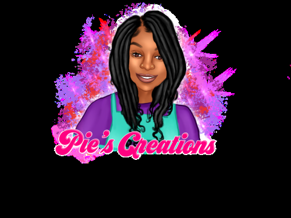

Krystian Stone
Mom. Student. Cafeteria Lady. Entreprenuer.
Born and raised in Fayetteville, North Carolina, mother to a beautiful babygirl and student at Wake Technical Community College in the Graphic Design/Advertisement program.
Pie's Creations
I started my small customized business in 2021 making t-shirts, masks, keychains, You Name It!
Work Experience
Child Nutrition Worker (Cafeteria Lady)
Cumberland County Schools
2022
Currently serving Kindergarten and 1st grade students break and lunch in a clean, organized and timely manner.
Cumberland County Schools Child Nutrition JobEducation
Associates Degree Graphic Design/Advertisement